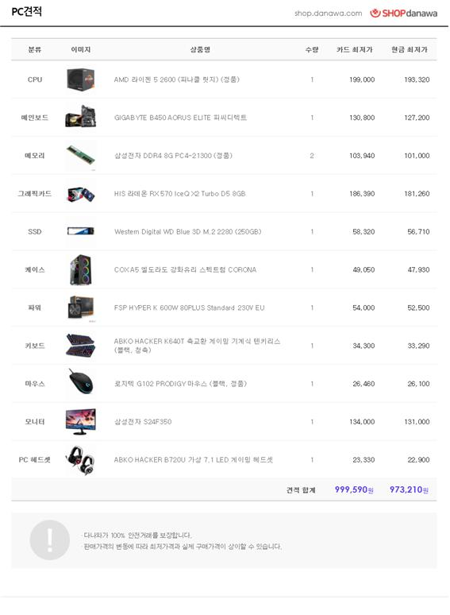

목차
1. 부품
1-1. 그래픽 카드
1-2. CPU
1-3. RAM
1-4. 메인보드
1-5. SSD
1-6. 파워 서플라이
1-7. 케이스
2. 그 외 장비
2-1. 모니터
2-2. 키보드
2-3. 마우스
2-4. 헤드셋
3. 호환성
4. 견적 내본 소감
5. 컴퓨터 조립 추천 사이트와 이유
1. 부품
부품의 기준은 가성비, 내가 하는 게임 기준으로 부품을 선정했다.
1-1. 그래픽카드
제품명 : HIS 라데온 RX 570 IceQ X2 Turbo D5 8GB
가격 : 17만 6980원
기능 :이미지를 디스플레이 장치로 출력하는 컴퓨터 하드웨어의 부품이자 확장 카드.
3차원 화면과 2차원 그래픽스를 위한 가속 렌더링, MPEG-2/MPEG-4 디코딩, TV 출력, 다중 모니터 연결 등 다양한 기능을 제공. (출처 : 위키 백과)
선정이유 : 일단 성능 자체가 굉장히 무난하며 사실상 내가 하는 게임(LOL, Rainbow Six Siege) 정도의 사양은 무난하게 실행, 플레이 할 수 있으며 그런 성능을 봤을 때 가격대가 낮기 때문에 선정 하였다.
1-2. CPU
제품명 : AMD 라이젠 5 2600(피나클 릿지)
가격 : 17만 9300원
기능 : 중앙 처리 장치(中央處理裝置) 또는 CPU(영어: central processing unit)는 컴퓨터 시스템을 통제하고 프로그램의 연산을 실행하는 가장 핵심적인 컴퓨터의 제어 장치, 혹은 그 기능을 내장한 칩. (출처 : 위키 백과)
선정이유 : 이 제품의 선정이유 또한 압도적인 가성비라 볼 수 있다.
AMD에서 출시한 2세대 CPU이며 작동 속도가 이전 세대 보다 빠르면서 이런가격이 가능한가 싶을 정도로 가격에 비해 성능이 좋다.
물론 내가 자주 하는 게임도 모두 여유롭게 돌릴 수 있기에 선정 하였다.
1-3. RAM
제품명 : 삼성전자 DDR4 8G PC4-21300 2개
가격 : 4만 7000원 *2 =9만 4000원
기능 : CPU, 메인보드와 함께 PC를 구성하는 핵심 부품가운데 하나로 CPU가 처리할 데이터가 임시로 저장되는 곳.(출처 : Rapter’s iNfo)
선정이유 : 삼성전자에서 출시하는 RAM들을 원래 보통 쓰는 편이고 8G 램 하나로도 충분하지만 후에 출시 하는 게임들은 보통 16G를 선호하고 주로 플레이하는 게임들도 평균 9.8G 정도의 RAM을 잡아먹기에 안전하게 2개의
RAM을사용하였다.
1-4. 메인보드
제품명 : GIGABYTE BV450 AORUS ELITE 피씨디렉트
가격 : 11만 7180원
기능 : 컴퓨터와 같은 확장 가능한 전자기기의 부품의 일종으로, 각종 케이블이나 배선을 통합하여 연결하는 회로가 설치되어 있는 판.
CPU나 램과 같은 시스템이 작동되기 위한 주요 부품 장착과 주변 장치를 연결할 수 있는인터페이스를 제공하는 인쇄회로기판(PCB)을 의미.(출처 : 위키백과)
선정이유 : M2 슬롯 2개, 메모리 슬롯 4개, 그래픽카드 슬롯 2개를 지원한다.물론 이렇게 본다면 괜히 슬롯만 많고 쓸모없어 보일 수 있지만 풍부한 확장성은 나에게 편하고 나중에 업그레이드를 할 때 메인보드를 다시 구입하지 않아도
되기에 가성비적인 면으로 이 제품을 선정하였다.
1-5. SSD
제품명 : Western Digital WD Blue 3D M.2 2280 (250GB)
가격 : 5만 8000원
기능 : 순수 전자식으로 작동하므로 기계식인 하드 디스크 드라이브(HDD)의 문제인 긴 탐색 시간, 반응 시간, 기계적 지연, 실패율, 소음을 크게 줄여 줌.(출처 : 위키백과)
선정이유 : SSD는 개인적으로 운영체제의 빠른 부팅을 위해서도 있지만 게임, 다른 여타 프로그램의 빠른 실행을 위해서 SSD 하나를 선정하였다.
1-6. 파워 서플라이
제품명 : FSP HYPER K 600W 80PLUS Standard 230V EU
가격 : 5만 4000원
기능 : 외부에서 들어오는 교류 전류를 직류로 변환해서 전자제품에 전원을 공급해주는 장비. (출처 : 나무위키)
선정이유 : 충분히 성능과 안정성을 인정받은 제품으로 쿨링팬이 저소음 SLeeved팬을 적용하여 조용하고 다른 여타 서플라이랑 비교했을 때 가격대비 성능이 아주 좋아 선정.
1-7. 케이스
제품명 : COX A5 엘도라도 강화유리 스펙트럼 CORONA
가격 : 4만 8000원
기능 : 컴퓨터 부품들을 고정하고 보호하는 껍데기.(출처 : 나무위키)
선정이유 : 사실 케이스의 선정 이유중 하나는 가격도 가격이지만 마음에 드는 외관, 그리고 또 다른 하나는 쿨링을 위해 메시 디자인을 적용시켰다는 것.
나는 열 관리가 잘 안 되어 컴퓨터의 성능 자체가 내려가는 것이 마음에 들지 않기에 이 엘도라도 버전을 선택, 그리고 호완성을 위해 이 제품을 선정하였다.
2. 그 외 장비
게이밍 컴퓨터이기에 게이머들이 자주 쓰고 내가 선호하는 것들로 선정하였다.
2-1. 모니터
제품명 : 삼성전자 S24F350
가격 : 14만 4000원
기능 : 시스템에 내린 명령을 처리하는 과정이나 결과를 볼 수 있게 해 주는 장치. (출처 : 네이버 지식백과)
선정이유 : 24인치에 FHD이며 요즘 나오는 144Hz가 아닌 60Hz이지만 그래도 실제 게임을 진행할 때는 프레임이 잘 나오며 모니터는 이 이상 성능이 과할 필요는 없다고 판단하여 이 제품을 선정하였다.
2-2. 키보드
제품명 : ABKO HACKER K640T
가격 : 3만 8730원
기능 : 이메일이나 워드 프로세서 등에서 숫자 및 문자를 입력할 때 많이 쓰이며, 게임이나 각종 애플리케이션에서도 유용한 단축키와 특수 명령 기능을 제공.(출처 : 네이버 지식백과)
선정이유 : 가성비 최고의 키보드 ABKO HACKER에서 만든 게이밍 기계식 키보드로 개인적으로 이 기계식 키보드에서 들리는 키 누르는 소리와 기계식 자체의 내구성으로 가장 저렴하면서 4-5년은 고장없이 쓸 수 있는 기 키보드를
가성비가 아주 좋은 제품으로 판단하여 선정.
2-3. 마우스
제품명 : 로지텍 G102 PRODIGY
가격 : 2만 1900원
기능 : 마우스를 움직이면 디스플레이 화면 속의 커서가 움직이고, 버튼을 클릭하면 명령이 실행되는 비교적 간단한 사용법 때문에 키보드와 더불어 현재까지 가장 대중적으로 많이 사용되는 입력장치.(출처 : 네이버 지식백과)
선정이유 : 명실상부 누구에게나 인정받는 최고의 가성비를 자랑하는 게이밍 마우스.
DPI를 자신이 원하는 대로 설정할 수 있어 FPS를 즐겨하는 나같은 사람에게 아주 유용한 마우스.
그립감도 좋고 제품 왼쪽에 있는 이전, 다음 버튼이 꽤나 편하고 좋다.
그런데도 가격은 2만원대 이기 때문에 이 제품을 선정하였다.
2-4. 헤드셋
제품명 : ABKO HACKER B720U
가격 : 2만 4100원
기능 : 스피커로 듣는 것보다 작은 음성신호도 재생 청취할 수 있고, 제3자에게 폐를 끼치지 않고 재생음을 들을 수 있고, 잡음에 구애받지 않게 됨.(출처 : 네이버 지식백과)
선정이유 : 다른 게이밍 헤드셋에 비해 특출난 것은 없지만 HACKER에서 만든 제품답게 착한 가격과 그럼에도 지원하는 7.1 가상 서라운드로 FPS를 하는 나에게 부담없고 실용적인 제품이라 선정.
3. 호완성

다나와
이 사이트에서도 확인할 수 있다.